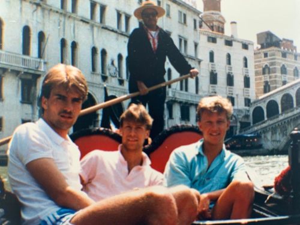
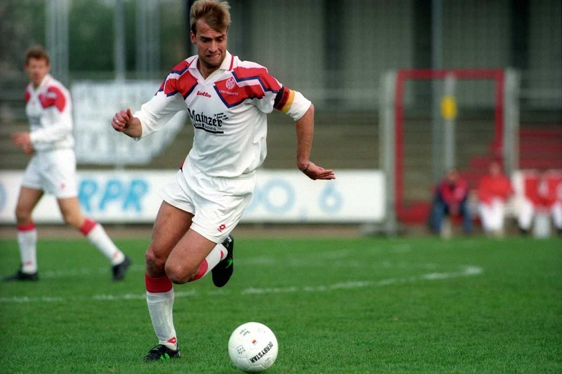

Childhood & Early Life
Jürgen Norbert Klopp was born on 16th June 1967 in Stuttgart to Elisabeth & Norbert Klopp, who also played football as a goalkeeper but was persuaded to focus on education by his father so rejected the opportunity to go professional. Instead he became a travelling salesman selling dowels and wall fixtures for a living. Since Norbert Klopp was an active sportsman in his youth he shared that part of his life with his son Jürgen putting him through rigorous physical training. Klopp went on to try many sports in his youth such as skiing, tennis, football and padel.
Jens Haas (childhood friend of Klopp) still remembers the first time he suspected his schoolmate Jurgen Klopp had the mind of a football manager. They were 11 years old, being driven to play football for SV Glatten's youth team, listening to their beloved Stuttgart's latest Bundesliga match on the radio. Young Jurgen began to analyse Stuttgart's tactics - and suggested a couple of substitutions to alter the course of the game. Moments later, the commentator confirmed that Klopp's suggested switches were being made. "I was amazed by his knowledge and understanding of the game," recalls Haas. "Sometimes I thought he was already a coach." Klopp's school days in the Black Forest offer the first clues as to how he grew up to become the ultimate modern football manager.
Jürgen Klopp grew up with two elder sisters in the Black Forest which is a village of Glatten near Freudenstadt. Growing up Jürgen Klopp aspired to be a doctor but never believed he was smart enough to pursue a career in the field of medicine. In his youth Jürgen Klopp played for many teams including TuS Ergenzingen as a junior player, 1. FC Pforzheim and then at, Eintracht Frankfurt II, Viktoria Sindlingen and Rot-Weiss Frankfurt. In 1988 Jürgen Klopp attended the Goethe University to study sport science, in which he graduated in 1995
"Norbert had a big influence on him, he shaped him," recalls Klopp's first coach Ulrich Rath, who founded the Glatten Under-11s team in 1972 so that his two sons Ingo and Harti could play for a team alongside Klopp and Jens. "It's important to know that Norbert Klopp wasn't born here in Glatten. He's from Rhineland-Palatinate, close to Mainz. The people from that area celebrate carnival. In Glatten and in the Black Forest, we don't," he adds. "Norbert was very active here in this club, first in football and then later in tennis. And Jurgen got his father's eloquence, enthusiasm and vigour. Despite Klopp's subsequent success in lifting numerous trophies in his career, a poignant absence looms large in his achievements - his father Norbert. Tragically, Norbert passed away four months before Klopp secured his inaugural coaching role at Mainz in 2001. In interviews, Klopp, has openly shared the impact Norbert had on his life. He revealed that his father, who faced the disappointment of a prematurely ended football career, became a driving force, pushing him forward.
Playing Career
Jürgen Klopp played a majority of his career as an amateur and in the lower leagues of German football. Whilst Jürgen was playing as an amateur, he worked a number of part time jobs such as a video rental store clerk and loading heavy goods onto lorries which his naturally bigger physique would have helped him in, as it was also a big part of his game in his playing career. Klopp was a midfielder and captain for SV Glatten's youth teams until he switched in his late teens to TuS Ergenzingen, a bigger team in a town 15 miles away. Rath describes him as a "bad loser" but a "natural leader". "He was always right at the forefront and he spoke up when something was not right," says the 79-year-old Rath. "We had a good relationship. He was ambitious. And he would always tell his team-mates 'Let's go' and push them." In 1981, matches moved across the village to a new sports club, where the yellow and black colours of the local team are an uncanny match for those of Borussia Dortmund. In 1990, at the age of 23, he moved 30 miles west to sign a semi-professional contract with second division team Mainz 05, under the watchful gaze of club captain Michael Schumacher. "Klopp was a typical student at this time, in both looks and personality," laughs the 62-year-old, sitting in a corporate suite at Mainz's new 34,000-seater stadium, a gleaming symbol of the club's dramatic rise under Klopp's management. "He was always wearing jeans and a T-shirt and was really easy-going with no stress."
Klopp played a majority of his career for Mainz 05 spanning 11 years and ending in 2001. Whilst Jürgen Klopp played for Mainz he immediately became a fan favorite due to his positive attitude and commitment to the club. A switch to defence under the tutelage of influential coach Wolfgang Frank turned the 6ft 4in Klopp into a success at Mainz, where he played 325 games in a decade-long career. But it was the sudden decision to install him as manager that really brought out his strengths.. Jürgen Klopp has always described his playing ability as average with a good footballing brain as he says, "I had fourth-division feet and a first-division head." Jürgen retired at Mainz 05 as their record top goalscorer, registering a total of 56 goals in total.
 Managerial Career
Mainz 05
After Klopp retired as a player from Mainz in 2001 he went on to be appointed as their coach for the remainder of the 00/01 season. Klopp went on to win his first match in charge of Mainz and six out of his first seven games in charge for them helping them to avoid relagation. Klopp went on to guide Mainz to a 4th place finish in the 2. Bundesliga two years in a row but was denied promotion following late drama on the final game of the season. The following season in 03/04 Klopp managed to one-up his previous seasons fourth-place finish and was able to lead Mainz to a third-place finish in the league and gain promotion to the top-flight of German football, securing Bundesliga football for the first time in the club's long history.
Mainz enjoyed three years in the Bundesliga, even though they had the smallest stadium and budget in the league at the time, finishing in 11th place in their first two years in the top-flight whilst obtaining qualification to the UEFA CUP. However in their third season in the Bundesliga 06/07, Mainz and Klopp were relegated back to the second division, Klopp decided to stay with Mainz after the relegation to see if he could turn it around and take them back to the Bundesliga. In spite of that Klopp decided to resign at the end of the 07/08 season as he was unable to achieve promotion to the Bundesliga. He resigned with a record of 109 wins, 78 draw and 83 losses for Mainz.
Borussia Dortmund
In 2008 Klopp became the new manager of Borussia Dortmund who had suffered a dissapointing previous season finishing in 13th place. In Klopp's first season in charge with Dortmund he won the first trophy of his managerial career and his first for the club managing to defeat the champions of Germany Bayern Munich to the 2008 German Supercup. The following season in charge Jürgen Klopp managed to guide Dortmund to European football with a fith-place finish even though he posessed one of the youngest squads in the Bundesliga.
In the 2010/11 Bundesliga season, Klopp's Borussia Dortmund went on a big win streak which helped them along their way to secure their seventh league title and Jürgen Klopp's first as a manager. Klopp's side wrote history that year as they were were the youngest ever side to win the Bundesliga. The following year in the 2011/12 season Klopp's kids went on to further etch themselves in German history by successfully defending their league title amassing 81 points that season which set a record for the greatest points total in Bundesliga history Dortmund lost the 2011 DFL-Supercup against rivals Schalke 04 but in May 2012 Klopp sealed the clubs first ever domestic double defeating Bayern Munich to win the 2012 DFB-Pokal final.
In the 2012/13 season Borussia Dortmund's league campaign began to deterioriate in comparison to previous seasons. Due to this Klopp decided to prioritise the UEFA Champions League to make up for their league form. Klopp's side went on a very impressive run defeating the toughest teams in the competition along the way to make it to the final. Narrowly losing the final to Bayern Munich was one disappointment in a load of losses for Borussia Dortmund as they lost the 2012 DFL-Supercup, were knocked out of the DFC-Pokal in one of the early rounds and finished in second-place in the Bundesliga to Bayern Munich finishing the season with zero trophies.
Borussia Dortmund went onto win the DFL-Supercup for the next two consecutive seasons losing two players that was vital to their success to their rivals. Following the disappointing start to their 14/15 season Klopp announced that he would be leaving the club at the end of the season. Dortmund went on a better run of form after Klopp annonuced his intention to leave Dortmund but not enough to turn their form around. Dortmund finished in seventh place in the league and were knocked out of the rest of the competitions that they were involved in. Jürgen Klopp finished at Dortmund with a record of 180 wins, 69 draws and 70 losses.

Liverpool FC
In 2015 1. FSV Mainz 05 became the manager of Liverpool FC, Klopp came in with big statements of his intentions to deliver trophies to Liverpool within four years which the club had been lacking whilst going through a rough period for a number of years. In Jürgen Klopp's debut season as Liverpool manager he was able to guide the club to two cup finals guiding his Liverpool side to the League Cup final and their first European final since 2007, Liverpool went on to lose both the League Cup and the Europa League finals. Liverpool went on to finish in eigth place in the Premier League for the 15/16 season, however the mood around the town had changed with the positive thoughts of what could be possible with Jürgen Klopp at the helm.
At the end of his debut season, Klopp was given a long-term contract extension of six years. The following season Liverpool achieved qualification for the Champions League for the first time since 2014/15. Jürgen Klopp managed to guide Liverpool to their first Champions League final since 2007 in the 2017/18 season. However Klopp's Liverpool side went on to lose 3-1 in the final to Real Madrid which made six defeats in seven major finals for Klopp.
In the 2018/19 Liverpool were knocked out of all domestic trophies very early on in the season but went on a very impressive run in the league amassing 97 points, the third-highest points total in the English top-division and the most points gathered by a team without winning the league title. Although success eluded Liverpool in domestic competitions, Liverpool went on to enjoy a FA Champions League run that would go down in history winning the club's sixth European Cup. Jürgen Klopp went on to be voted The Best FIFA Men's Coach for 2019.
The following year Liverpool went on to win the European Super Cup, FIFA Club World Cup making this side the first English team to win the international treble of the Champions League, Super Cup and Club World Cup. In the months following the Club World Cup Liverpool went continued the form they had been building and pressed ahead amassing a club record 99 points, the second-highest points tally in top-flight history finishing 18 points clear of sceond place. Winning the nineteenth league title for the club, the first since 1989/90 season and the first during the Premier League era. Jürgen Klopp was named the Best FIFA Men's Coach for the second year in a row
The following year Liverpool went on to deliver a lackluster season in comparison to what was expected of them, finishing in third-place in the league. In the 2021/22 season Jürgen Klopp's Liverpool were back to their regular self reaching every final available to them. Liverpool went on to win the 2022 EFL Cup, the first time they had won the competition since 2012, the 2022 FA Cup final becoming their first FA cup win since 2006 making Jürgen Klopp the first German manager to win the troph. Unfortunately for Klopp Liverpool would finish second in the Premier League by one point and then go on to lose 1-0 to Real Madrid in the 2022 UEFA Champions League final.
The following seasons began to show the decline of Klopp's Liverpool side as they failed to qualify for the Champions League and failed to compete in the cup competitions. In the 2023/24 season Klopp announced that he would be leaving his role as Liverpool manager at the end of the season as he is "running out of energy" and wishes to take a break from football management. Klopp went on to lead Liverpool to win the 2024 EFL Cup final defeating Chelsea in would be his last trophy for Liverpool. Jürgen Klopp finished at Liverpool a record of 299 wins, 109 draws and 83 losses.

Personal Accolades
Mainz 05
- 2. Bundesliga promotion: 2003/04
Borussia Dortmund
- Bundesliga: 2010/11, 2011/12
- DFB-Pokal: 2011/12
- DFL-Supercup: 2013, 2014
Liverpool
- Premier League: 2019/20
- FA Cup: 2021/22
- EFL Cup: 2021/22, 2023/24
- FA Community Shield: 2022
- UEFA Champions League: 2018/19
- UEFA Super Cup: 2019
- FIFA Club World Cup: 2019
Individual
- German Football Manager of the Year: 2011, 2012, 2019
- Deutscher Fernsehpreis: 2006, 2010
- Onze d'Or Coach of the Year: 2019
- The Best FIFA Men's Coach: 2019, 2020
- IFFHS World's Best Club Coach: 2019
- IFFHS Men's World Team: 2019
- World Soccer Awards World Manager of the Year: 2019
- Globe Soccer Awards Best Coach of the Year: 2019
- LMA Hall of Fame: 2019
- LMA Manager of the Year: 2019/20, 2021/22
- Premier League Manager of the Season: 2019/20, 2021/22
- Premier League Manager of the Month: September 2016, December 2018, March 2019, August 2019, September 2019, November 2019, December 2019, January 2020, May 2021, January 2024
- BBC Sports Personality of the Year Coach Award: 2020
- Freedom of the City of Liverpool: 2022